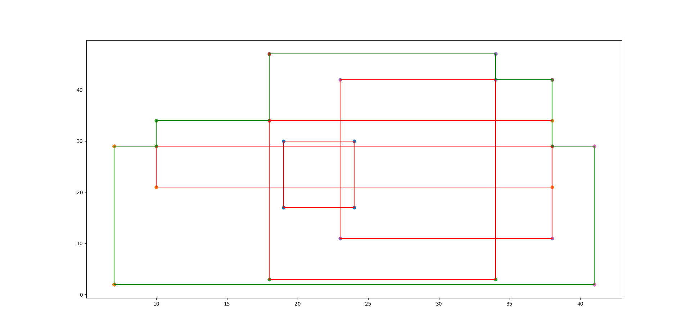

Input 14
5
19 17
24 30
10 21
38 34
18 3
34 47
7 2
41 29
23 11
38 42
Output 14
Measure = 1298
Number of Contour Lines = 12
Contour Line Segments:-
7 2 41 2
38 29 41 29
7 29 10 29
10 34 18 34
34 42 38 42
18 47 34 47
7 2 7 29
10 29 10 34
18 34 18 47
34 42 34 47
38 29 38 42
41 2 41 29
Contour Length = 158
